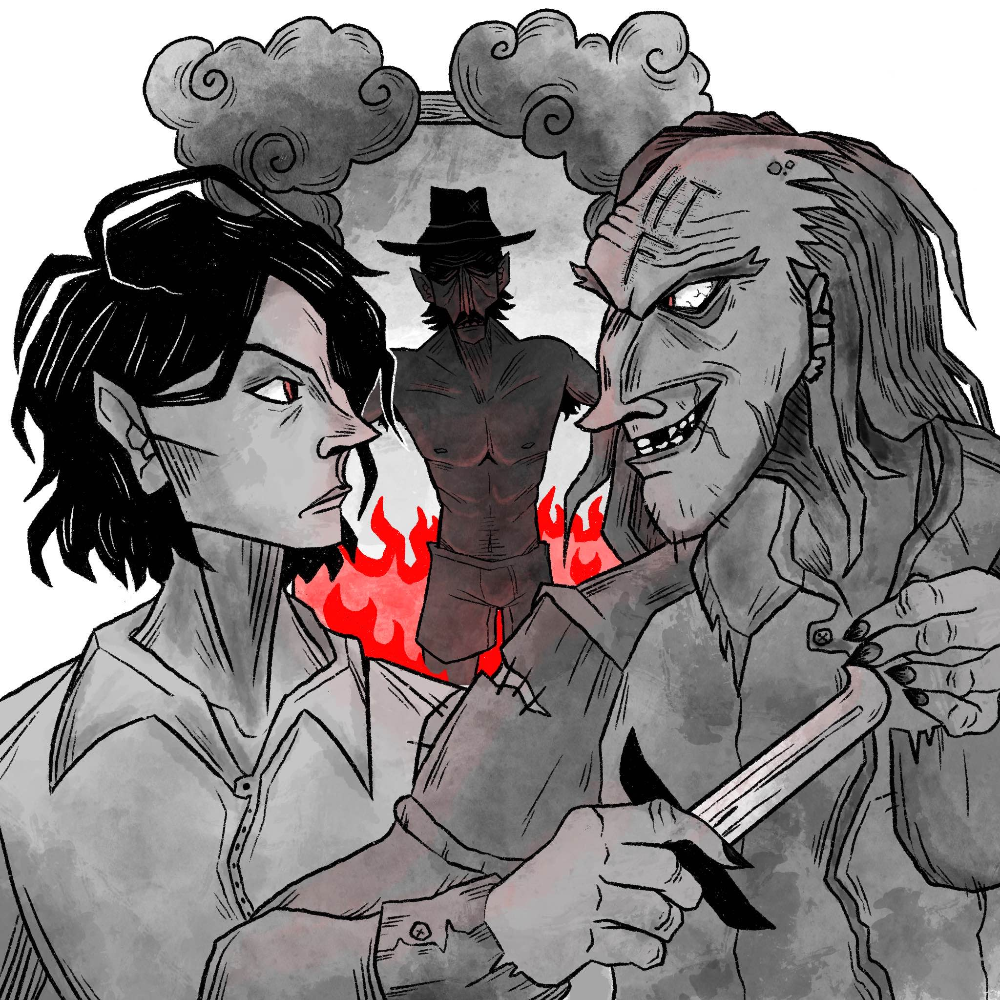
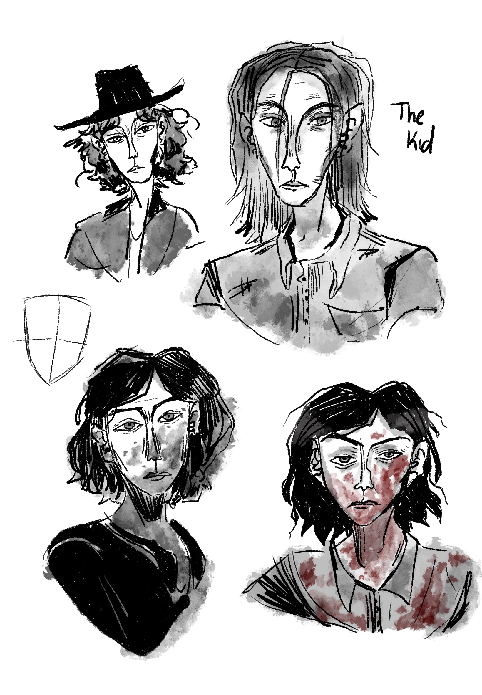
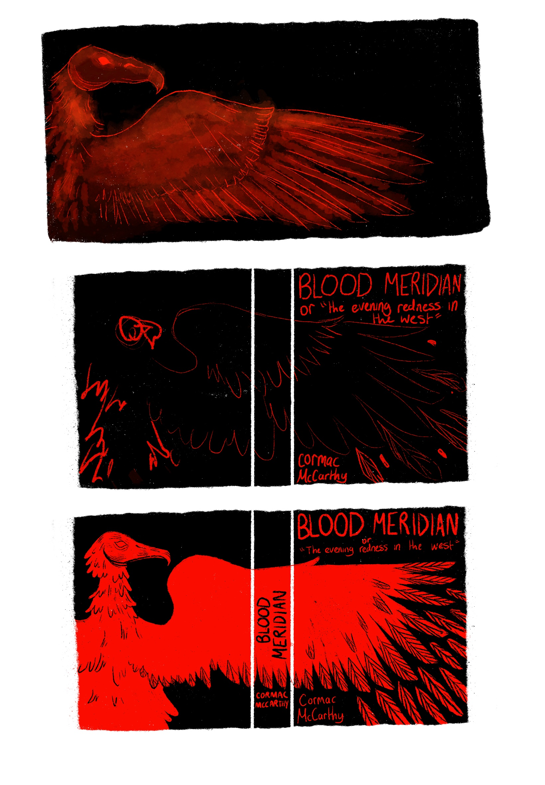

"Blood Meridian - Book Cover" - There's many symbols of the context and narrative that I carefully
crafted into my cover design. 'The Kid' is the character on the front
cover, and I purposely 'cut off' the top part of his head as a nod to
The Glanton Gang's sadistic intent behind their involvement in the
scalp-hunting market, which is a driving force of the violence
depicted in the novel. Ultimately, this leads to The Kid's demise at
the very end of the narrative.
The full image of the cover fits inside a silhouette of an American
black vulture. Black Vultures are native to where the novel is set,
but also share physical and behavioural characteristics with the
novel's antagonist, Judge Holden, who metaphorically represents
every component of war. As the cover extends into the full
illustration, the vulture's silhouette dominates the rest of the
imagery.

"The Kid and his Mule" - A single full-page illustration of The Kid, who was gifted a mule in
exchange for helping an older man run his farm in Tennessee. As
soon as he was given the mule, he embarked on his pilgrimage
towards Mexico. I was particularly interested in the wildlife of
Tennessee, which is known for its coniferous forest and
mountainous regions. Since I focussed on spot-illustrations with a
heavy character focus within my other illustrations, I wanted to
showcase a knowledge of my contextual understanding of The Kid's
original home state. Nature and wildlife are topics I'm fascinated by,
so this illustration was a very enjoyable exploration of Tennessee's
biodiversity.

"The Kid meets Toadvine" - The Kid is introduced to Toadvine, and they share a similar taste for
mindless violence. This spot illustration depicts one of the novel's
beginning events where they plot a fire in the hotel room of one of
the other residents. The illustration purposefully feels 'closed-in' to
give The Kid and Toadvine a scheming nature, which is
representative of how violence without a true purpose validates and
schemes with itself - 'misery loves company'.
"The Judge" - As the novel's antagonist, Judge Holden is a very interesting
character to me as the embodiment of war. In the novel, he is
described as a giant, completely hairless albino man. This
illustration is depicted from a retelling of the Glanton gang's strange
and cryptic first encounter with him.
"Sproule's Bat Bite" - Blood Meridian explores the power of nature through Sproule's
death - which is caused by an infected bat bite. Sproule is a
character who The Kid meets at the beginning of his voyage
towards Mexico, and I wanted to visualise the action of The Kid
lifting a rock up to kill the bat. I'm particularly fond of this scene, as
The Kid's intent to save Sproule purposely contradicts his character
description of 'having a taste for mindless violence'. If he has a
taste for mindless violence, wouldn't he have left Sproule to suffer?
Development
As this project was more character focussed, most of my sketches
involved visual explorations of the characters' facial expressions
and physical characteristics. I really enjoy drawing a character
multiple times until I get a solid sense of their personalities through
different physical features and what they communicate about the
character.

